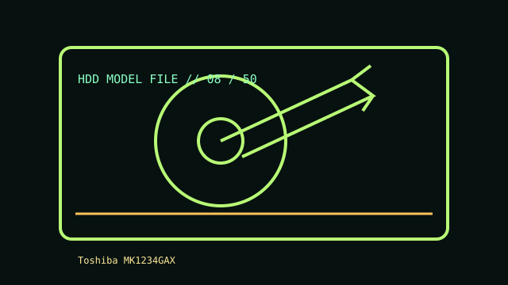

[ IDENTIFIED HDD // MODEL-SPECIFIC RECORD ]
Toshiba MK1234GAX
120 GB; 2.5-inch; PATA / ATA-6. Open model identification, compatibility, preservation, and source notes. This record describes the named model only; similar family names or suffixes are not interchangeable.

IDENTIFICATION: Read the complete model and suffix from the drive label, record firmware and serial information, and match them to the cited manual. Interface or capacity alone does not establish compatibility.
Recorded specifications
| Exact model | Toshiba MK1234GAX |
|---|---|
| Capacity | 120 GB |
| Form factor | 2.5-inch |
| Interface | PATA / ATA-6 |
| Recording | Not stated in cited record; if the model document does not specify it, do not infer from a family name—verify the drive revision. |
| Sectors / performance | Not asserted unless stated in the cited model documentation. Confirm logical/physical sector size, exact benchmark conditions, and firmware revision from the model-specific manual. |
| Documentation note | Model-family installation notes; verify label/revision. |
Compatibility and data-recovery safety
- Before use, check the full model/suffix, connector and signaling, host-controller support, power, mounting, firmware behavior, and sector presentation. Physical connector fit is not proof of electrical compatibility.
- Use the matching controller and bus setup: PATA needs correct cabling/jumper configuration; SCSI needs a compatible adapter, unique ID and termination; MFM/RLL needs an appropriate controller; SAS needs a SAS-capable host (not a SATA-only controller). Follow the exact manual.
- If data matters, avoid writes, formatting, filesystem repairs, repeated power cycles, and stress tests. If it clicks, repeatedly spins up, disconnects, or reports read errors, power it down and do not open it. Consult a qualified recovery specialist before DIY procedures; where appropriate, image the media read-only before analysis.
- Preserve the original label, jumpers, cables, adapter, firmware/host details, and acquisition notes. Keep verified checksums and independent copies; an aging HDD should never be the sole copy.
- SMR models can have different sustained-write and rebuild behavior; verify the exact recording technology and workload suitability before RAID or write-heavy use.
Sources
- Toshiba MK1234 installation notesModel-family installation notes; verify label/revision. Match document revision and model suffix to the nameplate.
- Seagate Support — drive documentation and troubleshootingGeneral manufacturer documentation index; not a substitute for model-specific recovery guidance.
- INCITS T13 — ATA standards committeeStandards context only; it does not establish compatibility with this specific drive.
Only details supported by the cited product documentation are asserted above. Confirm the exact model manual before use.